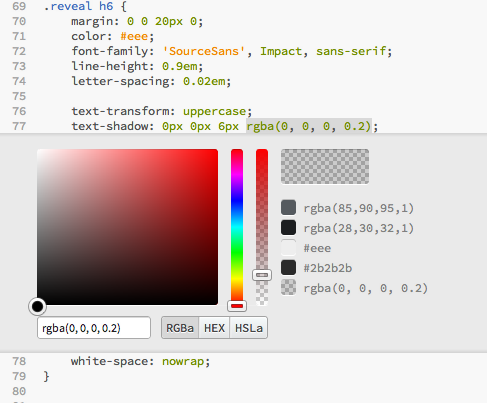
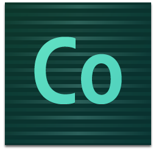

Brackets
built with the web for the web
Jason San Jose / @jasonsanjose
Agenda
- Brackets Intro and Demo
- Building Brackets
- Contributing to Brackets
A Code Editor For The Web
- Not a text editor. Not an IDE.
- Brackets is optimized for web development
- JavaScript, HTML, CSS and related web technologies are our focus
Our Principles
For the web, by the web
<!-- Main UI -->
<div class="main-view">
<div id="sidebar-resizer"></div>
<div id="sidebar" class="sidebar quiet-scrollbars">
<!-- Left-hand 'Project panel' -->
<div id="projects" class="panel">
<div id="project-header"></div>
Open development works
MIT licensed and hosted on GitHub

Tools shouldn't get in your way
Works with your browser
Demo
Extensions
20+ extensions so far. Here is the full list on the Brackets wiki and some highlights:
- Extension Manager - Jonathan Diehl
- Everyscrub - Peter Flynn
- V8/Node Live Development - Dennis Kehrig
Building Brackets
Why use web technologies?
- Initial quick edit prototypes were easy to build
- Multi-platform, multi-device, cloud potential
- If you can code in Brackets, you can code on Brackets
- No compiling*
From prototype to product
We miss our safety nets:
- Compiler errors and warning
- Strong types
- Refactoring tools
From prototype to product
We've found new tools to help along the way:
- Modularity and encapsulation - RequireJS
- Unit testing - Jasmine
- Static analysis tools - JSLint
- Browser-based debugging tools - Web Inspector
Our tools and frameworks
- Chromium Embedded Framework - Chromium/Webkit
- CodeMirror - Code editing widget
- RequireJS - File and module loading
- jQuery - DOM, event handling, async
- Mustache - Logic-less templates
- LESS - Dynamic stylesheet language
- Twitter Bootstrap - UI widgets, scaffolding
- JSLint - JavaScript Code Quality Tool
- Jasmine - BDD framework for testing JavaScript
Architectural patterns
- Model/view separation
- Command pattern
- Handling asynchronicity through Deferreds/Promises
- Modules, constructors, and classes
Extensibility
- Trying not to over architect (see Eclipse API) ;)
- Formal APIs in key areas: keyboard, menus, quick edit
- Still some missing APIs: editor themes, language modes
- Extension UI Guidelines
- Need more? Let's discuss on the brackets-dev group
Running on the Desktop
- Needed to support traditional, local-file-based workflows
- Native file/folder dialogs
- Native OS menus
- Windows Explorer / Mac Finder integration
Growing Pains
this- Application layout with flex box
- Lack of weak references/maps
- Lack of style scoping for extensions, though
<style scoped>and Shadow DOM are coming - Performance profiling
- …and the occasional browser bug
The Future
- Integrating Node.js
- More browser support for Live Preview
- Native OS menus
- …and more! See our backlog
Adobe Edge Code
- Edge Code is a distribution of Brackets
- Integrates with Adobe's Edge tools & services like Edge Web Fonts and PhoneGap Build
Contributions !== Code
- Use (and test) Brackets!
- File bugs and feature ideas:
github.com/adobe/brackets/issues - Vote or comment on backlog/icebox items:
bit.ly/BracketsBacklog - Update/create developer or user documentation:
github.com/adobe/brackets/wiki
Contributions === Code
- Issues labelled "starter bug"
- Backlog/icebox items labelled "starter feature"
- Things you want to see in Brackets
- Contributions to core require a signed CLA
Signing Up for a Bug
- Make sure it isn't "fix in progress" or "fixed but not closed"
- Comment on the bug saying that you're working on it
- After pull request is merged, comment on the bug asking the filer to close
Signing Up for a Feature
- Mention what you're working on on the Google Group or IRC
- Describe your design/approach and get feedback
- Or post a prototype (as a branch in your fork or as an extension)
Pull Request Reviews
- Small changes should be reviewed within a couple of days
- Larger changes/features will be scheduled for a future sprint
- Core team sprints are 2.5 weeks long
Core vs. Extensions
- Want to keep the core of Brackets small
- Try to build your feature as an extension
- Discuss with community where you run into problems or want a general API
- Extensions not in adobe/brackets repo don't need pull requests
- When ready to post, add a link to Brackets Extensions page
- If it makes sense in the Brackets core distro, we can pull it into
extensions/disabledand review
How to Build an Extension
- Create a folder or repo in
extensions/user - Create a
main.jsfile containing your main module - Use
brackets.getModule()for core modules - Use
require()for your own modules
Example: Hello World
define(function (require, exports, module) {
'use strict';
var CommandManager = brackets.getModule("command/CommandManager"),
Menus = brackets.getModule("command/Menus");
// Function to run when the menu item is clicked
function handleHelloWorld() {
window.alert("Hello, world!");
}
// First, register a command - a UI-less object associating an id to a handler
var MY_COMMAND_ID = "helloworld.sayhello"; // package-style naming to avoid collisions
CommandManager.register("Hello World", MY_COMMAND_ID, handleHelloWorld);
// Then create a menu item bound to the command
// The label of the menu item is the name we gave the command (see above)
var menu = Menus.getMenu(Menus.AppMenuBar.FILE_MENU);
menu.addMenuItem(MY_COMMAND_ID);
});
Some Limitations of Extensions
- Brackets doesn't yet use CommonJS
package.json, but will move to that in the future - Don't yet have official UI/mechanisms for discovering/installing/managing extensions (see Extension Manager
Developement Workflow
- Download the latest Brackets build
- Clone or fork the Brackets repo
- Run tools\setup_for_hacking
- Debug http://localhost:9234 Bracket's Web Inspector
- Occasionally clear cache and preferences
- {USER}/Library/Application Support/Brackets/cef_data
- {USER}\AppData\Roaming\Brackets\cef_data
UI Organization
Core Architecture
Async
// Many Brackets APIs return a jQuery Promise
var promise = doSomethingAsync();
// Setup callbacks
promise.done(function (result) {
// handle result
})
promise.fail(function (error) {
// handle failure
});
Async Internals
// You may need to define your own Async APIs
function publicAsyncCall() {
var result = new $.Deferred();
sendNetworkRequest(function (response) {
if (response.error)
result.reject(response.error);
else
result.resolve(response.data);
});
return result.promise();
}
// See utils/Async module for handling multiple async operations
Commands
// Register a command with a label, unique id and a callback
var MY_COMMAND_ID = "helloworld.sayhello";
CommandManager.register("Hello World", MY_COMMAND_ID, function () {...});
// Execute a command
CommandManager.execute(MY_COMMAND_ID, /* optional arguments, e.g. { arg: value } */ );
Key Bindings
// Define keyboard bindings (can be platform neutral or specific)
var bindings = [
{ key: "Ctrl-H",˙platform: "win" },
{ key: "Opt-H", platform: "mac" }
];
// Register a command and key binding
KeyBindingManager.addBinding(MY_COMMAND_ID, bindings);
Menus
// Acquire a top-level menu
var menu = Menus.getMenu(Menus.AppMenuBar.FILE_MENU);
// Add the menu item
menu.addMenuItem(MY_COMMAND_ID, /* optional key binding, e.g. "Ctrl-H" */);
Documents & Editors
- Document is the model. It contains the text of a file on disk.
- Editor is a thin wrapper around CodeMirror
- A Document may have 0..n Editors associated with it
Getting a Document
// Get the focused editor (may be "full" size or inline)
EditorManager.getFocusedEditor().document
// Get any document given a file path. Asynchronous.
DocumentManager.getDocumentForPath(path)
// Get an open document given a file path. Synchronous.
DocumentManager.getOpenDocumentForPath(path)
Using a Document
// Getting text
doc.getText(), doc.getRange(start, end), getLine(lineNum)
// Setting text
doc.setText(text), doc.replaceRange(text, start, end), doc.batchOperation(callbackFunction)
// Event handling
$(doc).on("change", handler), $(doc).on("deleted", handler)
Listening for Change Events
// if holding on to a document for longer than a function call, ref count it!
var myDoc;
function init() {
myDoc = getSomeDocument();
myDoc.addRef();
$(myDoc).on("change", handler);
}
function complete() {
myDoc.releaseRef();
$(myDoc).off("change", handler);
}
Other File I/O
// On Windows, paths look like "C:/foo/bar.txt"
// On Mac, paths look like "/foo/bar.txt"
var fileEntry = new NativeFileSystem.FileEntry(localPath);
var promise = FileUtils.readAsText(fileEntry); // completes asynchronously
promise.done(function (text) {
console.log("The contents of the file are:\n" + text);
}
.fail(function (errorCode) {
console.log("Error #" + errorCode); // one of the FileError constants
});
Extending Existing Features
// Quick edit (a.k.a. inline editors)
EditorManager.registerInlineEditorProvider();
// Quick open
QuickOpen.addQuickOpenPlugin();
// Code hints
CodeHintManager.registerHintProvider();
Odds and Ends
// Load a text file via RequireJS
var text = require("text!path/to/file.txt");
// Using templates
Mustache.render(templateText, view);
// Localized strings
var Strings = require("nls/strings");
StringUtils.format("{0}, {1}!", Strings.HELLO, "Brackets");